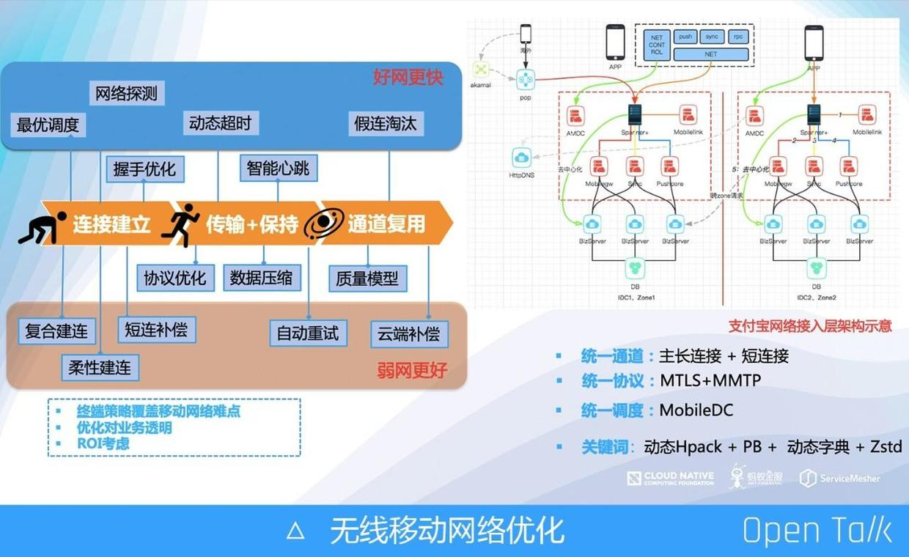
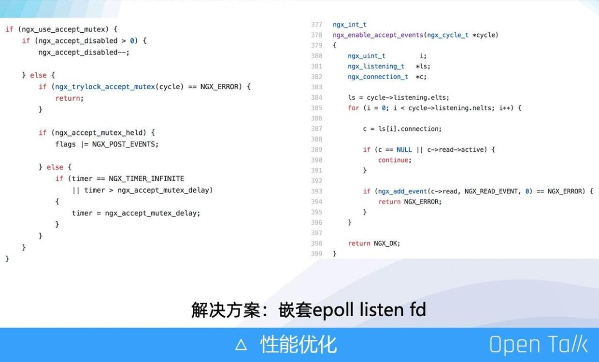

原文连接:https://www.cnblogs.com/upyun/p/12022626.html
2019 年 10 月 27 日，又拍云联合 Apache APISIX 社区举办 API 网关与高性能服务最佳实践丨Open Talk 杭州站活动，蚂蚁金服技术专家烈元做了题为《蚂蚁金服网络代理演进之路》的分享。本次活动，邀请了来自阿里巴巴、蚂蚁金服、Apache APISIX、PolarisTech、又拍云等企业的技术专家，分享网关和高性能服务的实战经验。
烈元，蚂蚁金服技术专家，蚂蚁金服开源项目 SOFAMosn 的核心成员，Tengine 专家。
以下是分享全文：
从网络硬件设备到自研平台，从传统服务治理到 Service Mesh，本次分享将会介绍蚂蚁金服网络代理在接入层以及 Service Mesh 化道路上是如何一步步支撑起秒级百万支付，千万春晚咻一咻的。
什么是网络代理
宏观上，网络代理主要由南北流量和东西流量两块构成。南北流量就是统一结构层，是从外部 Internet 等到数据中心内部的流量走向，东西流量指数据中心内部的 VM 之间的流量，比如微服务就是东西流量。
当我们追踪南北向的网络流，请求通常会经过四层负载均衡，七层负载均衡等，这通常被称为网络接入层代理。当数据中心内部主动访问公网时，流量通常也会经过 NAT 网关等做网络地址的转换，这也被称为网络代理。而在数据中心内部，网络代理的存在感似乎不是那么强，随着 SOA 的发展，我们形成了各种成熟的服务通信框架，例如蚂蚁金服的 SOFARPC，阿里集团的 HSF，Google 的 gRPC 等，网络代理功能被集成进了各种通信框架中，似乎已经 Proxyless 化了，但是随着微服务以及 Service Mesh 的架构提出，东西向的网络代理以独立的姿态又出现了。
传统的四层负载均衡的代表产品是 IPVS，百度、阿里等公司早年均对 IPVS 做了非常深度的定制功能，支撑了早期业务的飞速发展。
七层网络代理各个大厂均有产品代表，Google 的 GFE、百度的 BFE、腾讯的 TGW，阿里经济体内部也因为场景等原因有众多，例如手淘的 Aserver，集团 Web 统一接入 Tengine，当然还有蚂蚁金服的 Spanner。
随着 Service Mesh 概念的提出和技术的逐渐成熟，Mesh 中 Sidecar 角色的网络代理也像雨后春笋一样多了起来，包括蚂蚁金服的 SOFAMosn，Istio 社区方案的 Envoy 以及 Rust 编写的 Linkerd，当然 Service Mesh 场景的网络代理和网络接入层的代理我认为没有本质的差别，随着云原生的深入化，大家终将会形成合力并保持一致的形态。
我接下来会从这三个方面分别讲述蚂蚁金服网络代理近十年来的演进过程。
蚂蚁金服网络代理的十年
早在 2016 年，流量对于网络的挑战就已经很大了，比如“咻一咻”业务，1 分钟内产生 210 亿次调用量，这个是真正从外部导入内部的流量，现在的数据就更大了。这种大流量、大业务场景对于系统是很大的挑战。
蚂蚁金服内部始终围绕“稳定性高可用、容量、高效接入访问加速、灵活弹性、安全合规防攻击”这五方面来做整体设计，不断升级核心能力，架构以及运维能力，底层基础网络物理带宽从 1G 到 10G、25G、100G；阿里骨干广域网络走出杭州扩展到全国、全球规模，不断地通过前瞻技术架构研发，技术自主能力的提升和转变，助力业务发展。
接入层网络代理的十年变迁，从 2010 年到 2019 年，主要经历了三个时代，四个阶段的发展。
前世
2010 年前蚂蚁金服网络代理是商业设备的时代，包括 F5 的 Bigip 作为四层接入，负责硬件的负载均衡，当然后面慢慢被 LVS 所替代；Netscaler 作为 SSO 的网络卸载等。
自主研发
到了 2011 年，因为无法满足各种业务逻辑，我们走上了自研的道路，设计了硬件、软件的一体化方案。
自研四层网络代理
2011 年后蚂蚁金服进入四层网络代理自研阶段，主要是基于内核的 NetFilter，比如 LVS 做自研扩展。2014 年，我们全面使用 DPDK 技术进行了重构，极大的加大了网络吞吐量。而从 2018 年至今，内核有了更多的网络技术，比如 EBPF、可编程交换芯片等。
蚂蚁七层网络代理：Spanner
Spanner 是蚂蚁金服的七层网络代理 ，其意为扳手，主要是为蚂蚁金服 SSL 卸载和网络接入提供了白盒化解决方案，承载了蚂蚁金服所有的业务流量，包括支付宝 App、Web、商户等的终端访问。

上图是 2010 年至今的七层接入的演进过程，每个阶段有不同的特性，Spanner 是基于 Nginx fork 的，和 Tengine 有很多的融合，因此会有很多 Tengine 的特性。
上图是蚂蚁七层网络代理接入架构图，用户通过蚂蚁金服的网络入口进来，通过多协议接入，到 LVS 和 Spanner，Spanner 作为统一七层网关把请求分发给后面的应用。在 Spanner 上有很多业务逻辑、协议支持，比如 TLS 1.3、QUIC、HTTP 以及蚂蚁自研的协议等。蚂蚁的所有业务，包括支付宝钱包、其他页面都是通过这个入口进来，Spanner 目前支持了亿级用户的同时在线、千万级别的 QPS、百万用户的推送。
金融级三地五中心架构的流量调度
2013 年蚂蚁金服上架了自己的逻辑数据中心架构 LDC，同时随着演进支持了目前的蚂蚁金服金融级的三地五中心容灾架构：
Spanner 在其中承担了很重要的流量调度作用。起初流量低的时候，一个机房、一个 LDC 就可以把所有的流量都接入。随着用户的增长，出现了同城双活 LDC，同城多活 LDC，直到现在的弹性伸缩混部 LDC，快上快下，能够很快的扩容机房出来，这种弹性构架对于 Spanner 流量调度有很高的要求。
为了满足金融级三地五中心架构的流量调度的要求，针对不同的业务场景，Spanner 要提供不同的功能。举个简单的例子，比如第一次请求进来，Spanner 会随机分流到一个 zone，zone 会把用户分到所属单元内，比如用户属于杭州单元，即杭州机房，当这个用户下次再访问时，就会直接定位到这个杭州机房。这个功能有点类似于Tengine 的 Session sticky，不过那是相对于单机的维度，而 Spanner 的调度是作用于机房维度的。
目前 Spanner 能够支撑并不限于以下的场景：
机房内 zone 随机路由
Cookie zone 转发
蓝绿发布
容灾
弹性调度
压测流量调度
灰度流量调度
SSL/TLS 实践
蚂蚁金服作为全集团最早实践 https 全站的 BU，一直围绕着安全，合规，性能的主题进行全站加密体系的建设。
软硬件一体解决方案
2013 年蚂蚁就引入了 Cavium Nitrox 和 Intel QAT 两种卡，2014 年我们已经在全站实现了 HTTP 化和各种硬件加速。
硬件加速的主要改造点是支持异步，因为原生的 QAT 使用是同步的，比如 Nginx 把握手加密的请求提交给 QAT 卡之，需要做同步等待，在这个时段内你在 Nginx 就不能处理其他东西。而异步则不同，当 Nginx 把握手加密的请求提交给 QAT 卡后，可以直接去处理其他业务逻辑，等到 QAT 卡把这个握手相关信息做完并回调，再继续处理。在 Spanner 里做 Nginx 的 SSL 握手异步化改造，改造了 Openssl 同 Cavium 的 SSL 加速卡进行适配，整套方案在当时的机型上较 CPU 提升了基于 RSA2048 算法的 SSL 握手 3 倍的性能。
协议实现的改造-MTLS
在协议层上，我们自研了 MTLS 协议。在 2015 年，TLS 1.3 还只是一个草稿，并没有真正 Realese ，因此我们基于 TLS 1.3 草案，在 TLS 1.2 上以扩展形式实现了：
我们提前享受了 TLS 1.3 带来了红利同时在此基础上做了更多优化，沉淀了蚂蚁金服的轻量级 mTLS 加密库。
安全合规能力持续升级
蚂蚁金服是一家金融公司，这就要求我们必须支持国密算法的，我们内部比如网商银行已经落地了国密算法的支持。由于国密算法的标准是基于 TLS 1.1 做的，在 TLS 1.3 下存在较大的性能问题，作为亚洲唯一有 OpenSSL Committer 的团队，我们一直在跟国家做 TLS 1.3 支持国密算法的推进工作，相信不久将来就可以看到支持 TLS1.3 的国密。
AntTLS 库是蚂蚁内部基于 OpenSSL 自研的库，加入了诸如多硬件卡的可信机制的支持 feature，对于包括国密在内的汇编优化也进行了大量的优化。除此之外，因为国密的硬件必须使用加密机，我们的硬件加速卡也通过了这些合规验证。
移动无线战役
伴随着 ALL IN 无线的集团战略的推进、支付宝 App 使用的人数增长和场景复杂化，我们同支付宝网络团队于 2015 年合作进行了名为“一网打尽”的移动技术整治专项，在介绍具体的技术改造前，我们先来看看移动互联网场景的问题：
端到端的无线网络复杂性；
运营商网络黑盒；
无线终端的长时在线性；
具体到支付宝 App，线上支付、线下支付、大促、境外游支付等为常见的场景，而操作响应慢、无响应、支付缓慢、push 消息不及时等都是令人头痛的移动体验，所以我们围绕快速稳定和高效进行一场移动无线战役，这里将着重分析在 Spanner 上进行的技术改造。
当时我们最大的两个业务是咻一咻和集五福。
以咻一咻为例，这个对于网络的要求非常高，当时有上亿的用户等待上图的界面，同时还有上亿的用户在不停点击，还要有实时的显示数。当时这几块对我们后台产生了亿级别的 QPS，可以说实实在在的点击全部是由七层网络代理接入的，这对系统的稳定性是一个巨大的考量。

在无线移动网络里，我们进行了很多优化，通过最优调度、网络探测、动态超时等让我们在网络通畅时效果更好。同时也做了在错误情况下的重试，比如网络不好的情况下做了很多短连补偿，即在长连接请求不成功时发短连接来做补偿，还有柔韧建连、自动重试，这让我们在弱网环境下也能更好的完成任务。
万物互联云原生
自 2018 年起，我们更多的在扩张协议接入，比如最近比较火的 MQTT，以及相当于新一代 HTTP/3 的 QUIC。
在构架升级上，我们在海外新建了很多就近接入节点，这样让你在海外可以通过加速节点更快地访问到支付宝钱包。
还有对云原生生态的融合，比如类似 UDPA 的基本的数据面平台，以及接入层容器化、混部。
QUIC 方案介绍
因为 QUIC 只有一个协议的实现，真正怎么落地和运用实际都是没有的，我们引入 QUIC LB 解决 QUIC 连接迁移难题。举个例子，从 4G 切换到了 WIFI 的这个转换过程保持数据的连轴状态，由 App 发起 QUIC 请求，最先的入口请求实际是 LVS+Aliguard，这是一个安全组件相当于流量防护，用于防 DDoS 攻击。经过这个安全组件的清洗后，会把流量往后传给 QUIC LB，这个作用是做一个打点保证同一个用户的多次请求能够访问到后端的同一台机器上。
也就是说 QUIC 本身是无状态的，但是在用户第一次请求的时候，会埋上点，然后再往后端传。在这之后才会把请求转给真正的 Server。这个我们是由 Nginx Stream 模块来实现的。
针对 QUIC 我们有过多的优化，如上图，有一些针对这三大块的专利产出对 QUIC 进行优化。
QUIC 我们主要应用于海外链路，比如在国外进行回源就是通过这个链路来进行的。因为在这种弱网场景下 QUIC 的的效果更好。
性能优化
2013 年，蚂蚁的运营模式是多域名多 VIP，这就导致一个 Nginx 要开几千个监听端口，从而产生了一个很大的性能问题。比如关闭 AcceptMutex 肯定会产生惊群，这对 CPU SYS 的消耗很大；而如果把 Accept Mutex 打开，又会遇到性能瓶颈，因为每次在拿到锁后，所有的监听套接字都会加到 epoll 里，而且监听套接字有几千个，这个对性能损耗是很大的。
现在已经有了很多技术来解决这个问题，比如 Reuseport，最初支持 Reuseport 的是 Tengine，但是 Tengine 最先支持的版本在 Reload 时，连接会 reset，直到最后官方的版本才解决了 reset 问题。还有 EPOLLEXCLUSIVE 的一个参数，这个是在内核阶段解决惊群问题的，但它对内核的要求非常高。

而在 2013 年时，我们的解决方法如上图，嵌套 epoll listen fd。我们把所有的监听套接字的 fd 加到 epoll 里，epoll 本身有一个 fd，我们再把这个 fd 加到 Nginx 的主 fd 里面。如此可以达到每次拿锁之后，只需添加一个 fd，只要这个 fd 可读，就证明里面肯定有事件。通过这个方式，我们大量减少了对于高并发下的系统负载。这在当时给我们提供了一种嵌套 epoll fd 的思路，在这种场景下，并非一定要去使用 Nginx 的那个 epoll，还可以自己在加 epoll 来存放某一类型的事件，这里是放监听的事件。
Mesh 架构下的网络代理
服务发现与路由
如开始提到，从宏观上说网络代理主要由南北流量和东西流量两块构成，而东西流量的服务发现与注册和微服务相关，前面介绍的都是入口流量七层代理，后面介绍的会更接近于东西流量。
如上图，东西流量最开始的构架是 F5，一个应用访问另外一个应用通过内部 VIP 进行调度，这个是最老的模式，很难管理；之后发展为 Proxy 代理模式，也是做七层，一个 Nginx 做代理到后面的 App；最右边模式是现在业内比较流行的，很多企业内部都用的这种发布注册的模式，即一个应用注册服务，然后来调对应的服务方，目前蚂蚁金服内部也是这种模式，不过我们也在做一些技术改革。
Service Mesh
首先简单介绍 Service Mesh 的概念。以蚂蚁金服为例，蚂蚁的应用都是 Java 类型的，因此有一个做发布注册功能的 .jar，这个 .jar 包含了所有的发布、注册、流量均衡以及限流这些跟业务无关的逻辑。这就是 ServiceMesh 的意思，从数据层面来讲，就是拆出和业务无关的逻辑作为一个单独进程来运行。在拆出了所有的发布、注册、与应用逻辑无关的内容后，真正的 Java 里面就只有业务逻辑和一个简单的协议发送，这二者是同级部署的，相当于 Java 直接发送给 Proxy 一个代理，然后通过 Proxy 来做这种交付或发布注册。这个就是我们内部现在正在做的演变，也是业内比较火的一个微服务。
蚂蚁金服内部进行 Service Mesh 主要是因为：
拥抱微服务，云原生
异构语言体系融合
统一服务治理
运维体系有利支撑
全局流量管理，打通南北，东西
金融级网络安全
现在大家一般的应用在外部才有加减密码，金融级的网络安全的意思是我们的东西流量即内部流量也是需要加密，如果没有这个 sidecar 和架构，很难做到这种加密。因为不能让每个 Java 里面的 .jar 去支持正数加载做加解密，并且也很难做很多优化。
为金融业务而生的 SOFAMesh
上图是 SOFAMesh 的构架，每个 Pod 下面有应用和 SOFAMosn，SOFAMosn 是前面提到的独立出来的 Sidecar，是一个数据平面。应用跟TLS、国密、服务鉴权之间的交流是通过 SOFAMosn 来交互的。还有流量镜像层，这个跟安全更加相关，我们内部使用的会做审计工作，在这一层可以做很多的业务逻辑，最上层则是控制面。
以 SOFAMosn 支持 API 网关来举例，中心化网关是很早以前的一个架构，是集群式网关。集群式网关在蚂蚁内部会有一个关键的性能瓶颈，因为双十一大促时，下面有成千上万的业务接入，你根本不知道它们的水位是多少，很难平复水位。
因此就衍生出了去中心化网关的架构，把 API 网关的逻辑下沉到应用上，以 .jar 的形式接入进去，这样窝点实际水位就和应用同等了，不需要有一个集中式单点的业务。但这也造成了升级非常困难的问题，因为线上几百个应用，需要推动几百个应用的业务方做架构的升级，有时升级需要 3 个月甚至半年。这个架构还有一个问题是异构系统没有办法完全支持。
所以我们在落地 Mesh 化网关方案，它会独立于应用进程，部署在同级的两个进程，这样业务可以随时改动，整个业务逻辑的改动对用户是透明的。这个方案也可以解决之前所说的流量难以评估、性能瓶颈等问题，因为它和应用是同级部署的，直接做水平扩容就可以，不管什么情况下的压测都能很好的评估出来。Mosn 里面也嵌入了 Lua 脚本模式来做动态配置，这个近期会开源。
蚂蚁金服于 2017 年开始探索 Service Mesh，2018 年开始自研 SOFAMesh，2019 年上半年开始落地支撑了 618 业务，目前覆盖交易核心链路 100+ 应用，10w+ 容器，并且通过一些业务流程的下沉，RT 降低了 7%。上图展示了一些 SOFAMesh 的优势。
云原生安全网络代理 SOFAMosn
SOFAMosn 的地址是：https://github.com/sofastack/sofa-mosn，由于是跨团队的项目，出于折中以及落地成本的考量，我们选择使用 Golang 。对于 Golang 的性能，我们前期也做了充分的调研和测试，在 Service Mesh 场景下单 Sidecar 的性能从来都不是需要最高优先级考虑的问题，往往对性能 RT 有极致要求的业务目前看来并不适合 Mesh 架构。
SOFAMosn 能力与模块划分
上图是 SOFAMosn 模块与能力划分图，我们在设计当中借鉴了很多 Nginx 和 Envoy 的设计理念与设计模型，它可以基于 Stream、Net 等进行能力扩展。
SOFAMosn 协程模型
Golang 体系下，我们使用轻量级的协程进行基础架构，一条 TCP 连接对应一个 Read 协程，执行收包、协议解析，一个请求对应一个 Worker 协程，执行业务处理、Proxy 和 Write 逻辑。
SOFAMosn 能力扩展
协议扩展
通过使用同一的编解码引擎以及编/解码器核心接口，提供协议的 plugin 机制，目前已经支持：
SOFARPC
HTTP1.x,/HTTP2.0
Dubbo
NetworkFilter 扩展
通过提供 Network Filter 注册机制以及统一的 Packet Read/Write Filter 接口，实现了 NetworkFilter 扩展机制，当前支持：
TCP proxy
Fault Injection
StreamFilter 扩展
通过提供 Stream Filter 注册机制以及统一的 Stream Send/Receive Filter 接口，实现了 StreamFilter 扩展机制，包括支持：
流量镜像
RBAC 鉴权
上图是一个简单用于说明这个扩展的心跳例子。
基于 xDS 的动态配置
上图是我们支持的 xDS 全动态配置，最大特点是只要调用一个接口就可以增加cluster。大家使用 Nginx 最大的一个问题可能就是 cluster 的更新。在 xDS 模式下是全动态更新，比如监听套接字、cluster、路由这些更新全部都是动态化的，是一个能够满足社区的标准方案。
Mesh 场景下网络代理的挑战
在 Service Mesh 场景下的网络代理，和接入层还是有很多的不同的。对于接入层，可能就是一个集中式单独产品，我们一个团队可以管控。但是在 Service Mesh 场景下就需要更高考量，比如 SOFAMosn 要部署到线上数十万多万个容器，且实际每个容器的使用者都是不同的用户。因此它对于平滑升级，可回滚的兼容是很有需求的，并且我们也需要对一些通用的框架进行针对性地扩展。
大家一般写软件，平时测压性能挺好，但是一放到线上大规模环境，就崩掉了。这个就是兼容性问题，不同的应用，部分 Mesh 化；同一个应用，部分 Mesh 化。然后还有 TLS 加密链路，对哪些链路进行加密的问题，这些都是实际存在的问题。
平滑升级
如何把 Sidecar 注入到用户的 App 中，业界目前使用的是透明代理的方式，现在用的最多的透明代理是 Iptable。Iptable 是直接把端口重定向，但是我们发现了一些性能上的大问题，所以我们还是选择通过 Local 的方式进行，也就是 App 会改它的访问端口，全部访问 Local，访问 Sidecar，当然这个方向我们明年会进行很大的改动。
10w+实例
大规模场景下，不光是数据面还有控制面都是一个巨大的挑战。比如我们一个单例可能有上万的路由节点，一个节点上可能有二十万个后端机器列表，并且路由规则都有几千条。这样就导致在整个匹配过程中，实际性能造成了很大的影响，我们为此做了大量的优化。
动态服务发现
当你一直在做高频的发布注册时，对软件的稳定性有着很大的考验。比如一秒钟可能会推几十兆的机器列表数据，我们的机器列表页很多，这样就导致在这几千上万的机器列表推动下来，要进行 PB 反序列化以及做后手注入。
运维挑战
SOFAMosn 发布业务无感知，平滑升级。
由于 Sidecar 作为基础设施的特殊性，我们需要达到基础设施升级的业务无感知的目的，传统的网络代理例如 Nginx 通过关闭老进程的 Listen 端口来做到新进程接管新连接和请求的目的，这种方案对于 HTTP 等短连接 Ping-Pong 协议是非常有效的，但是无法很好支持长连接的双向流式协议。所以我们在 SOFAMosn 上实现了连接迁移能力，达到网络代理升级过程中的连接平滑迁移，保证服务的持续性。通过 sendmsg 以及 TCP_REPAIR 都可以做到套接字的迁移，其实在此种场景中套接字的迁移能很好实现，整个连接的 session 恢复会是比较麻烦的过程。
资源问题
当网络代理 SOFAMosn 作为 Sidecar 部署时，我们面临了新的挑战，不再像 Spanner 一样独占物理机，或者以独立应用的容器化方式只用关心自己的能力以及资源消耗，我们必须精细化 CPU、内存等资源，才能达到与应用最优的协同合作方式。
性能问题
性能问题更多是 Golang 相关：
GOMAXPROCS ：Cpu 消耗与 RT 的 tradeoff
优化 GC 策略升级 1.12 版本，MADV_FREE，MADV_DONTNEED 带来的影响
Chan 的吞吐极限，减少主业务数据的传递
CGO 对于 TLS 签名计算有 83% 的性能衰退，AES 对称加密
Unix Domain socket 较 TCP socket 提升 8% 性能
使用 tmpfs 或者 mmap MAP_LOCKED 优化 IO 负载较高对共享内存刷 page cache 的影响
Unix Domain socket 较 TCP socket 提升 8% 性能，因为它少走了很多 TCP 协议上的东西，所以我们计划让同机交付走 Unix Domain socket。
TLS性能

Golang 的 TLS 是自己实现的，没有使用 OpenSSL。针对这块我们做了测试，如上图，蓝色是基于 Nginx，可以看到 Golang 自身做了很多汇编优化，所以性能并没有相差很多。我们计划对 runtime 做汇编的优化，比如国密，以后的效果肯定是会越来越好。
HTTP 性能
HTTP 数据目前我们不是很满意，后续会进行持续优化。我们内部目前做的最多的还是 RPC 协议，HTTP 协议会放到明年的 roadmap 里面，明年会重点支持 HTTP 系。
总结
关于未来：
云原生，多云混合云时代，南北，东西流量的边界逐渐模糊；
应用网络代理层部分能力固化，下沉至系统网络栈或者智能硬件设备；
Sidecar -> Proxyless -> Networkless；
物理通信基础设施的升级势必带来应用网络层的变革。